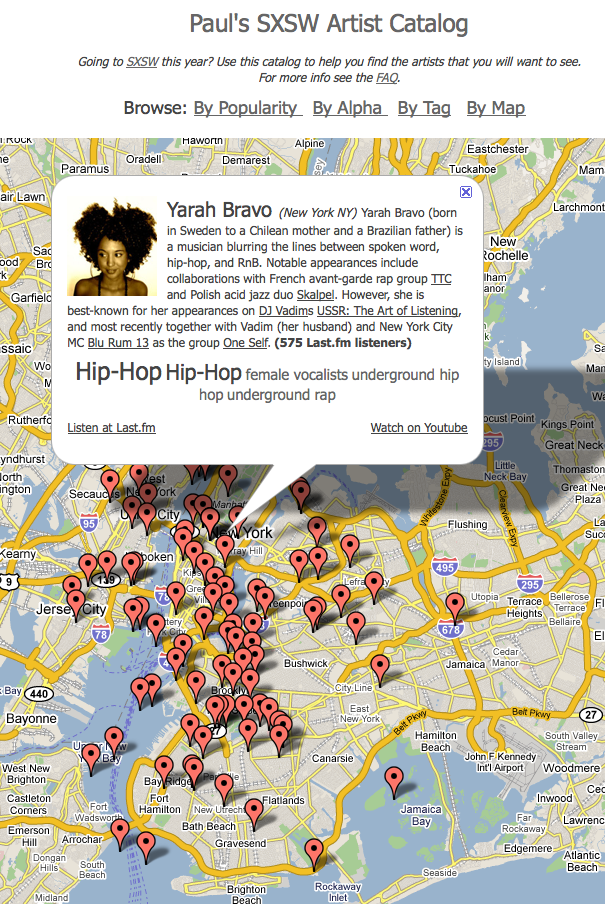

Adding Google maps to the SXSW Artist Catalog
The map shows just how global the SXSW music festival really is, with bands coming from all over the world. There are bands from as far north as Iceland, and from as far south as New Zealand. There are artists from Iran, Uganda, Nigeria, the Canary Islands, and a hundred from the NYC area. I find that it is fun to explore for music in this way. I'll see a band in some far flung place like Laramie Arizona, and wonder what kind of music I'd find there.
This was my first time using the Google maps API. I never realized how powerful and flexible the API is. One of the tricks that you can do with the API is to use a MarkerManger to control how many markers are visible at any particular zoom level. Without this, I would be trying to display over a thousand markers at once, which will hobble many browsers.
One issue, we only have city-level resolution for artists, so when you look at a city like London or NYC, there may be 100s of artists at a single point. To deal with this, I randomly dither the lat/longs for artists that collide with others, so each artist appears at a distinct location. The downside of course, is that some artists will appear in strange places like the Hudson river (and as far as I know, the only artist who has actually appeared in the Hudson is Emma Sophina, and I don't think she's going to SXSW). Despite this, the dithering works pretty well - here's a zoom in on the NYC area. Without the dithering, you'd only see one marker.

There are a few errors - for instance the band "paté de fuá" appear in Maine and not Mexico city - this is because the band is listed as being from "Mexico City ME" on the SXSW site - and believe it or not, there is a Mexico Maine. Probably over the next few days, I'll add a patch-up mechanism to make it easy to fix these sorts of errors.
This has been a fun little project - I really enjoy playing with all of these APIs to build something that might be useful for others. I'd love to hear feedback and suggestions - so feel free to send them my way.

Nice one. Here's a big map:
http://www.flickr.com/photos/alf/3210748862/sizes/l/
I wonder if there's a way to make the markers bigger when there are more artists clustered together.
Posted by alf on January 19, 2009 at 03:14 PM EST #
Alf's comment is what I was going to recommend.
Here's how I deal with markers in same location:
) Create an object to act as an associative array, call it "locations"
var locations = new Object();
2) Every time you see a new data point, create a hash of the latitude/longitude:
var latlngHash = (lat + "" + lng);
latlngHash = latlngHash.replace(".","").replace(".", "").replace("-","");
3) If that hash isn't yet a key in the object, then store a new array in it and push the new data point onto it.
If it is already a key, then just push the new data point onto the old array.
if (this.locations_[latlngHash] == null) {
this.locations_[latlngHash] = []
}
this.locations_[latlngHash].push(entry);
4) After you've read through the data points, you can iterate over the locations object and decide what to do when there are multiple data points for one location.
for (var latlngHash in this.locations_) {
var datapoints = this.locations_[latlngHash];
if (datapoints.length > 1) { //do something else } else { }
}
In my case, I used the information to create larger markers for locations with multiple entries.
To deal with markers in similar locations, you can use the ClusterMarker extension.
Anyway, glad you like MarkerManager!
- pamela
Posted by Pamela Fox on January 20, 2009 at 06:32 AM EST #